North Arkansas — A Weekend With A View
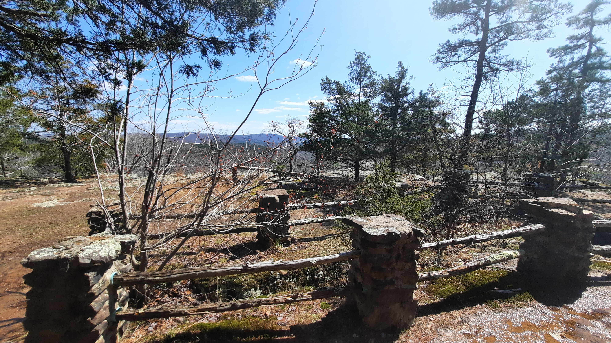
We camped at Ozark View RV Park in Omaha, Arkansas, and this area instantly moved into our must-see category. From the campground itself, you get beautiful views that make you want to slow down and stay outside a little longer.
Why We Loved Ozark View RV Park
The campground is spacious, comfortable, and easy to settle into. It has that relaxed small-campground feel where you can actually unwind, and it is a great home base for families who want a mix of scenic drives and short adventure runs.
Scenery in Every Direction
Access to some of the most scenic views in Arkansas is a huge reason this trip stood out. We explored overlooks and forest roads that gave us incredible perspective on the region, including stretches near Ouachita National Forest that were absolutely worth the drive.
Highlights From This Trip
- Pedestal Rocks for unique formations and big views
- Magazine Mountain for sweeping Arkansas scenery
- A couple of off-the-path waterfalls we stumbled across while exploring side roads and trail pull-offs
Photo Gallery
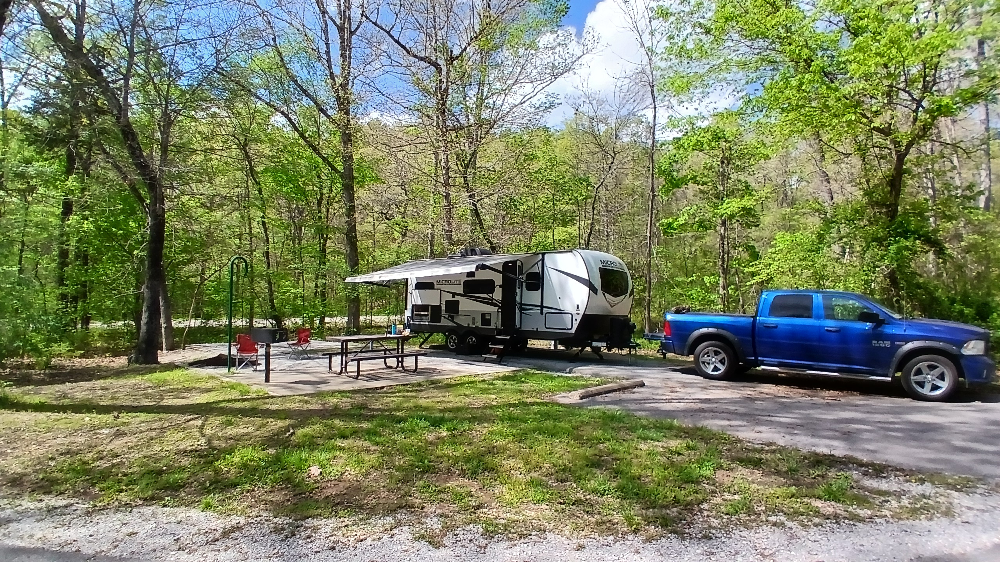
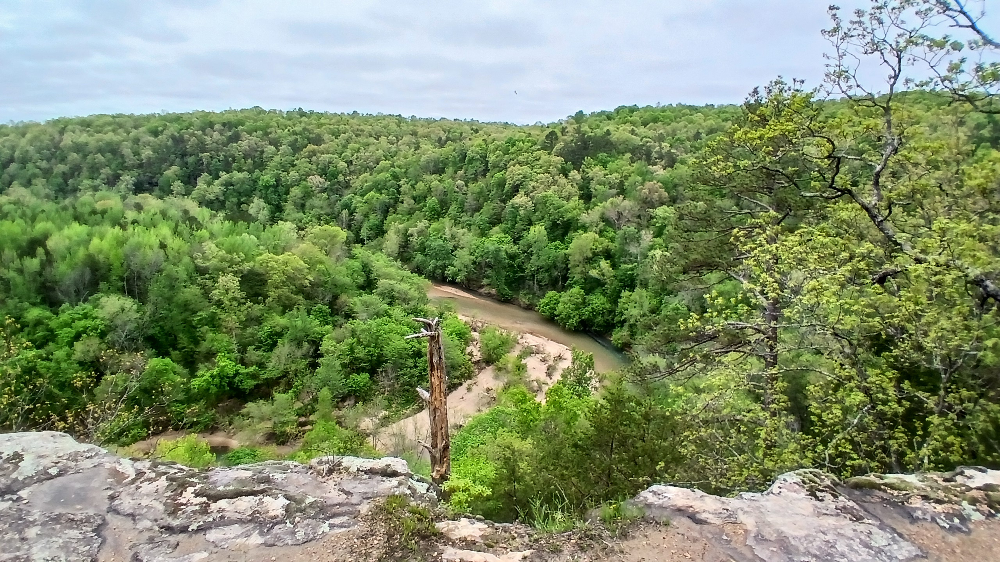
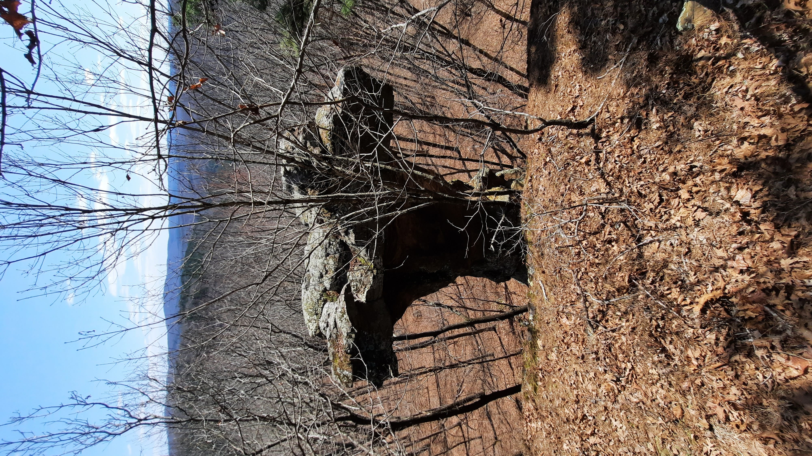
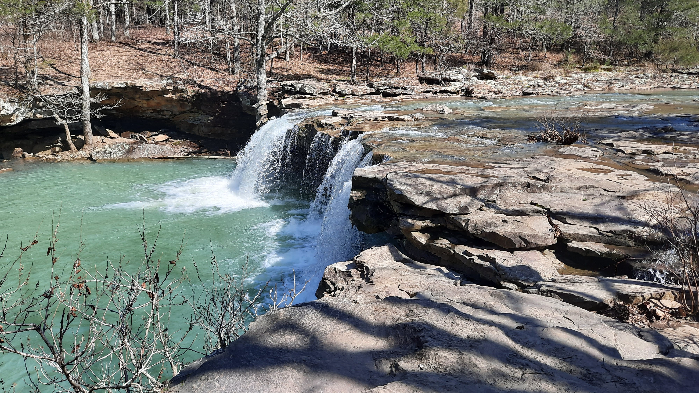
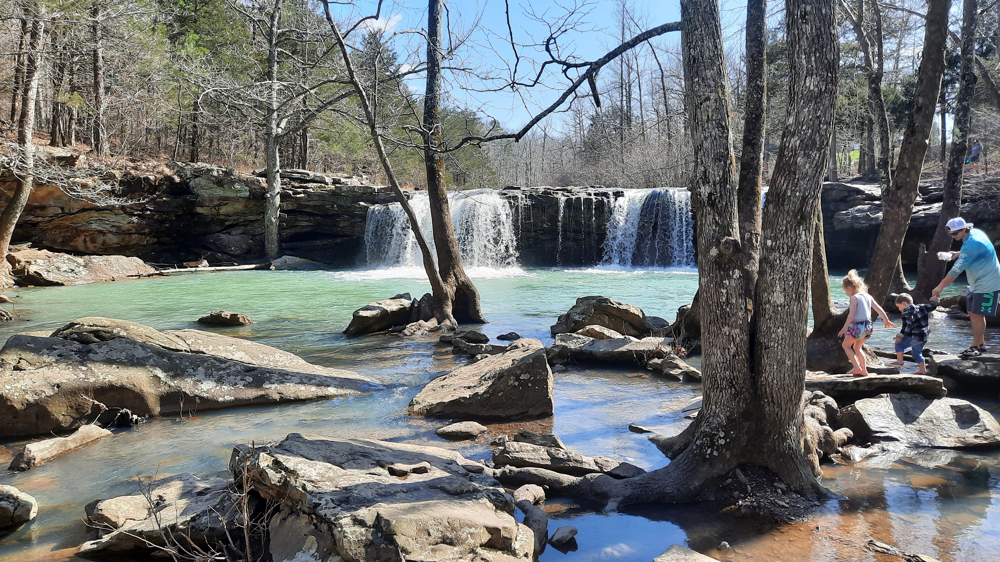
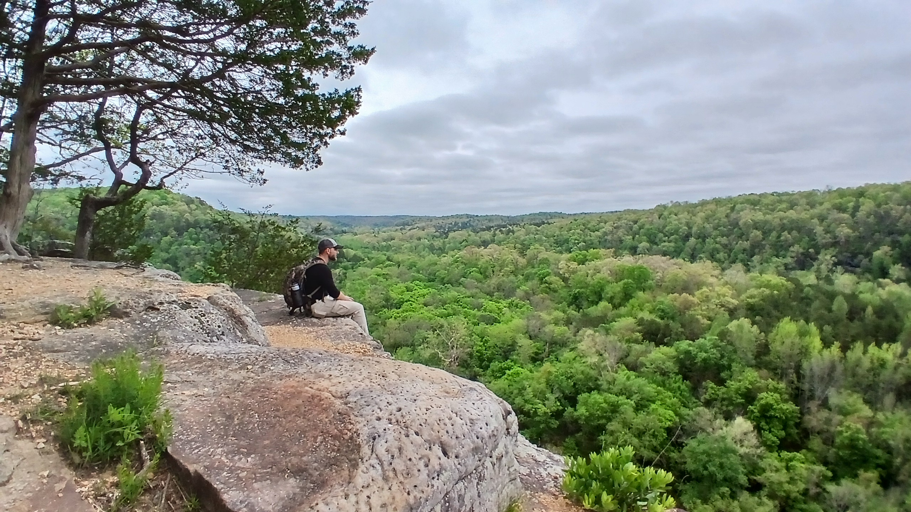
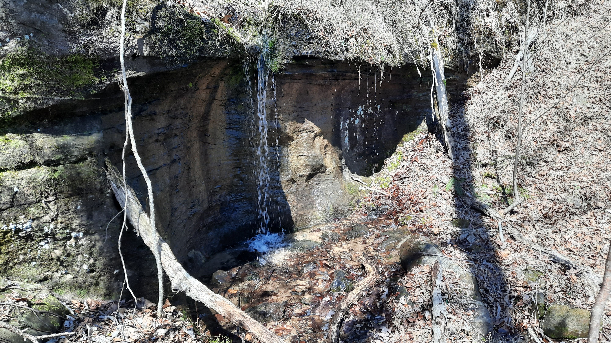
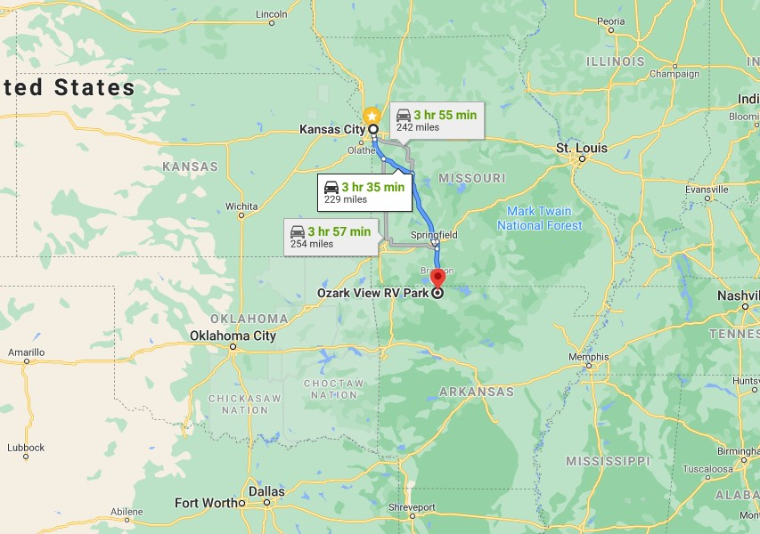
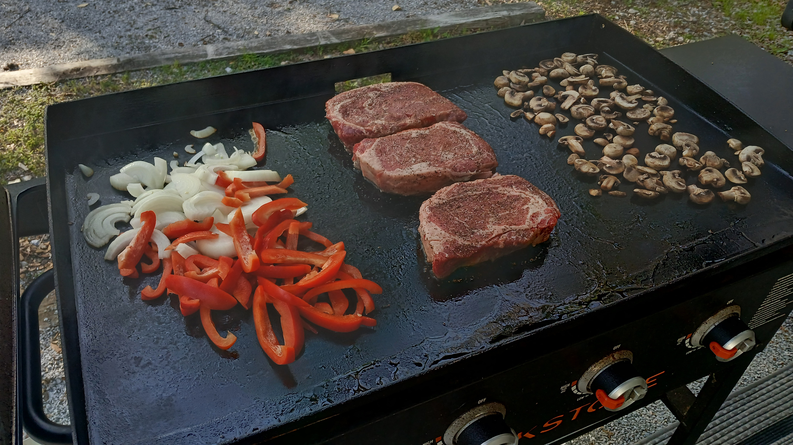
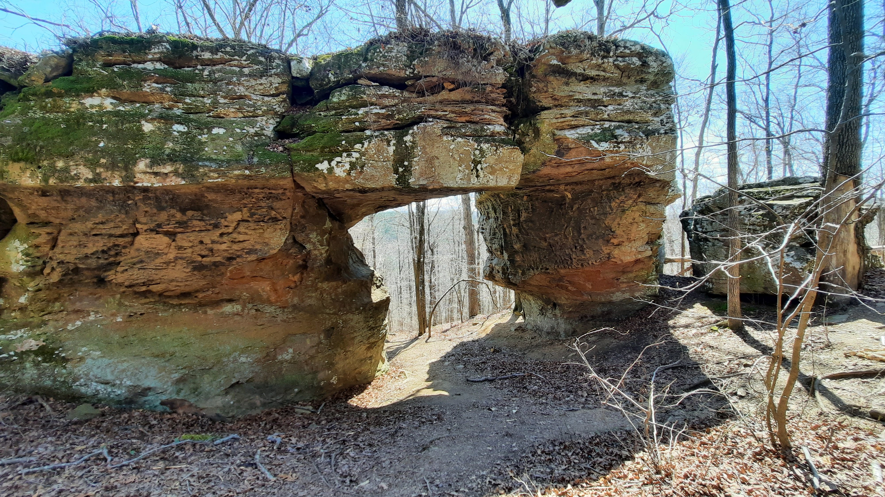
This whole area is just a must-see. If you want a campground with views plus access to iconic Arkansas spots, Ozark View RV Park is hard to beat.